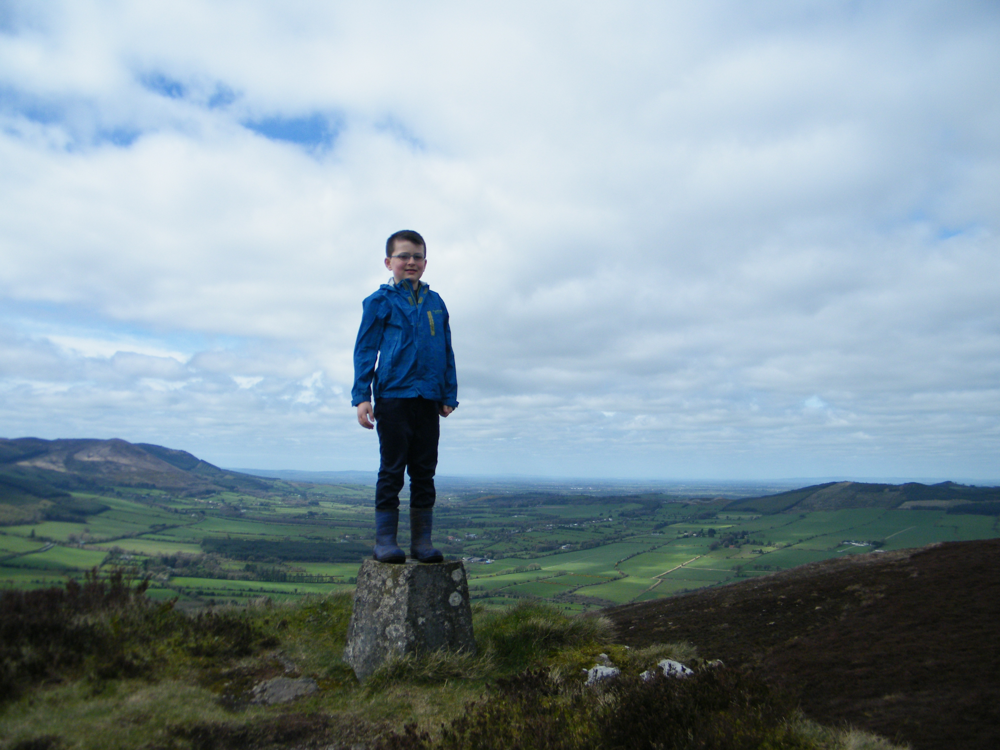

Map
Castlegale on the right and Kilcruig on the left of the picture.
Our route to Carrighenry(Castlegale) and on to Carrigeenamronety (Kilcruig). We returned to Darragh using part of the Keale River Walk - not shown above

Boreen Deargh

A resting spot in memory of Johnny Hennessy
Close to the top of Castlegale
Signing the book on Castlegale
Castlegale summit
The route to Kilcruig is up beside the forest after crossing 3 fields
Turn left here for Kilcruig
Signing the book on Kilcruig
Kilcruig done for April

The walk down from Kilcruig

Joining the Keale River walk

Lunch time by the Keale River

Keale River Walk

End of the Keale River Walk at Darragh